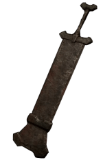

Dragon Bone Smasher

Information
A bladeless, thick mass of iron used for smashing.
According to the ancestors of Stonefang's excavators,
it's said this weapon was created to face dragons,
and is imbued with magic to protect the wielder from fire.
Characteristics:
-
 Ultra Great Sword
Ultra Great Sword -
 1337 AC
1337 AC -
 200 Damage
200 Damage